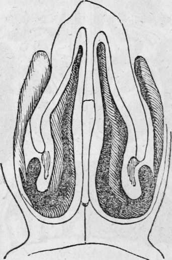
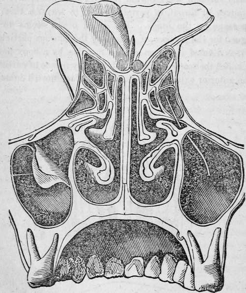

Chapter XV. The Sense Of Smell
Description
This section is from the book "Human Physiology For The Use Of Elementary Schools", by Charles Alfred Lee. Also available from Amazon: Human Physiology, for the Use of Elementary Schools.
Chapter XV. The Sense Of Smell
1. The sense of smell takes cognizance of the odorous properties of bodies. The seat, or organ, is the mucous membrane, which lines the nasal cavities, and is called the schneiderian, or pituitary membrane. It is covered with nervous papillae, similar to, but more delicate than those which cover the organ of taste. These cavities open anteriority through the external nostrils, and posteriorly into the fauces or throat, to permit the air to traverse them in its passage to the lungs. The nasal organ seems to be designed for the purpose of collecting the odorous particles; and it is divided into two similar cavities, by a bony partition, called the vomer, which is extended by means of cartilage to the anterior extremity of the nose. Each nostril contains two convoluted or turbinated bones, of a light spongy texture, one being situated above the other ; and they divide the general cavity of the nostril into three passages.
Front view of the nasal fossae.
2. In connection with the nostrils, there are several cavities, as in the frontal and upper jaw bones, called sinuses. These communicate with the nostrils, and as they extend the surface on which the lining membrane is expanded, they are supposed to contribute to the sense of smell, by affording capacious receptacles for air, loaded with odorous particles. Of the 14 bones which enter into the formation of the face, 11 assist in forming the cavities of the nostrils, as do also three out of the eight bones that form the cranium. Be-
Nasal fossae seen from behind, sides the cartilage which forms the septum of the nose, two others of an elastic nature constitute the wings ; and as they admit of motion, several muscles are attached to them, in order to regulate the external orifices in accordance with different conditions of respiration, and also to enable us to exercise the sense of smell with greater effect, when we wish voluntarily to employ that function.
3. Tne membrane which lines the nasal fossae, resembles the mucous membranes generally, and adheres firmly to the bones and cartilages which it covers. Externally, this membrane is continuous with the common integuments, and posteriorly with the lining membrane of the throat. It varies somewhat in appearance in different situations. In the sinuses, it is thin, pale, and of a smooth surface ; but where it constitutes the immediate seat of smell, it is thicker, more vascular, and of a redder colour than mucous membrane in other situations. It is studded with mucous follicles, which yield the secretion with which it is moistened ; though it is also bathed with the tears that spread out upon it, after having been conveyed from the eye through the nasal ducts. The nasal mucus seems as essential to the sense of smell, as the secretion from the mucous membrane of the mouth to that of taste. In those who use tobacco in the form of snuff, this secretion often becomes so scanty or so changed in quality, that the smell is much impaired, and sometimes entirely lost: the voice also is seriously injured by the same practice.
4. The olfactory, or first nerve, is the sense of smell. This is spread out on the thick vascular portion of membrane just described. Twigs from the first and second branches of the fifth, are plentifully ramified over the whole surface of the pituitary membrane, imparting to it common sensibility. The nose is also supplied with branches from the facial to regulate the action of the muscles. Dr. Majendie says, that the organ of smell ought to be described as a sort of sieve, placed in the passage of the air, as it is introduced into the chest, and intended to stop every foreign body that may be mixed with the air, particularly the odours.
5. What is called odour, or smell, resides in nearly all bodies, and is given off by moisture, heat, motion, or friction. Those which do not possess this quality are called inodorous. Those little particles which convey the odour, are scattered through the air, and in breathing drawn into the upper part of the nostrils, where the sense of smell principally resides. If we breathe through the mouth, odours in general will not be perceived, unless very pungent. The fluid which moistens the lining membrane of the nose, is supposed not only to render it more sensitive and delicate, but also to entangle the odorous particles, and in this way detain them longer in contact with the olfactory nerve. The constant evaporation which takes place from the membrane, owing to the passage of the air in respiration, requires that the secretion should be constant as well as copious; otherwise the membrane would soon become dry and parched.
6. It is very difficult to describe an odour, except to those who have smelted it, or something with which it may be compared. We can say that odours are pleasant or disagreeable ; that they are aromatic, or sweet, rancid, or fetid, etc. ; but we can give no correct idea of the peculiar smell of bodies, such as camphor, mush, garlic, the rose, etc, without experiencing the sensation which their smell produces.
7. The odorous particles of bodies must be very small to excite any sensation on the animal organs. A grain of mush will, it is said, scent a room for years, and not lose any of its weight ; Mr. Boyle asserts that the smell of cinnamon, from Ceylon, is perceived at sea at the distance of twenty five miles from the island. Scales in which a few grains of musk have been weighed, have been found to retain the smell for twenty years, though during all this time, they must have been constantly giving off odorous particles. Haller kept some papers forty years, which had been perfumed by a single grain of amber, and at the end of that time they did not appear to have lost any of their odour. But these particles cannot be as small as those of light, because we see that glass is capable of retaining the former, but suffers the latter to pass through it. The art of the perfumer consists in fixing and preserving odours in the most agreeable and convenient vehicles.
Continue to:
Tags
humans, anatomy, skeleton, bones, physiology, organs, nerves, brain